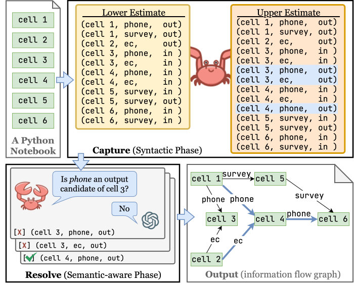
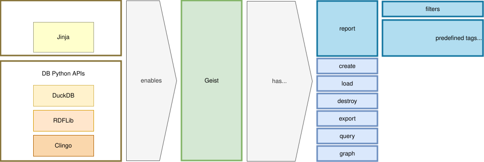
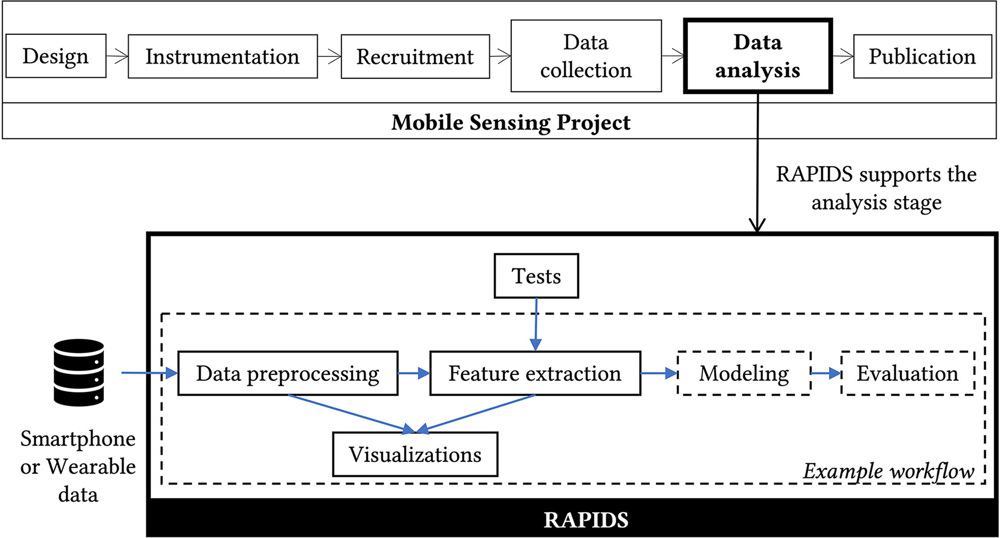

About
I am a PhD student co-advised by Dr. Bertram Ludäscher and Dr. Timothy McPhillips in the School of Information Sciences at the University of Illinois Urbana-Champaign. My research focuses on LLMs for code and reasoning with LLMs, particularly neuro-symbolic approaches that make AI systems more explainable and debuggable.
Previously, I worked at the Mobile Sensing + Health Institute (MoSHI) at the UPMC Hillman Cancer Center for 3+ years for 3+ years, where I led the data science team on projects using smartphone and wearable sensor data to predict mental and physical health in a variety of clinical and community samples.
Latest News
- 2025/07 First-author paper on LLM-assisted code analysis for Python notebooks accepted at COLM 2025 (acceptance rate: 32%)
- 2024/07 Presented poster on Geist, a new templating language for data transformation, querying, and report generation, at SciPy 2024
- 2024/04 Awarded the SciPy 2024 Financial Aid Scholarship
Selected Publications — full list on Google Scholar

Capture and Resolve Assisted Bounding Strategy (CRABS) COLM 2025
CRABS introduces a pincer strategy for extracting inter-cell information flows from Python notebooks: syntactic analysis constrains both the workload given to the LLM and the responses it can generate. By bounding the problem from both sides, CRABS overcomes long-context challenges, curbs hallucinations, and achieves higher accuracy than the baseline, LLM-only method.

